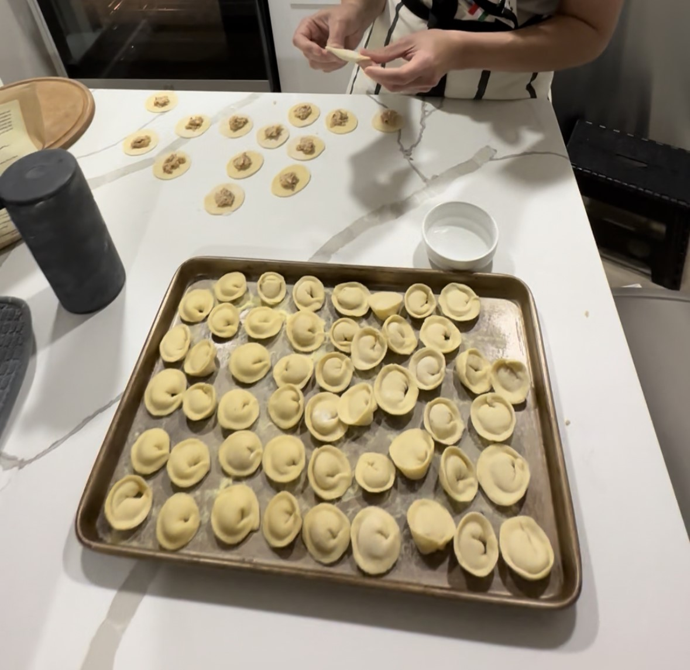

Cappelletti
Cappelletti are a big-time family classic. This is the type of pasta we make for birthdays and other “important” occasions. Cappelletti are prosciutto-filled heart-shaped pasta and they are amazing. Here is my grandma’s recipe:

Ingredients
Dough
- 400 grams of flour
- 1 egg
- A pinch of salt
- Water
Filling
- 2 tablespoons of oil
- 1/2 an onion
- A small piece of bread soaked in milk
- 2 tablespoons of grated parmesan
- 50 grams of prosciutto, finely chopped
- 1 can of deviled ham
- 1 tablespoon of parsley, finely chopped
- 2 egg yolks
- Salt
- Pepper
- Nutmeg
Procedure
Dough
- Combine the ingredients and form a dough that is not too sticky or hard, adding water as needed. Cover and let it rest.
Filling
- Sauté the finely chopped onion in oil for at least 10 minutes, then remove from heat and let cool.
- Soak a small piece of bread in milk until softened, then squeeze out any excess liquid. Combine with the cooked onion.
- Add the parmesan, prosciutto, deviled ham, parsley, and egg yolks. Season with salt, pepper, and nutmeg, then mix well.
Forming the Cappelletti

- Roll the dough until very thin and cut circles approximately 5 cm in diameter.
- Place a small amount of filling in the middle of each circle. Wet the border with a drop of water, then fold into a semicircle and press the edges together to seal.
- Bring the two ends of the semicircle together to form the cappelletti shape.
Cooking and Serving
Cook the cappelletti in a large pot of boiling salted water. Serve with a sauce that complements the flavor, like a bit of heavy cream and parmesan.